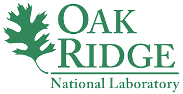
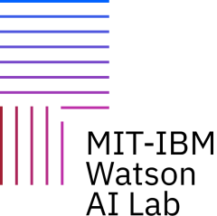

Shuaicheng Zhang
Agentic AI / Graph Reasoning / Scientific Discovery
Designing AI systems that reason over structure, memory, and science.
Hi there, I recently completed my Ph.D. in Computer Science at Virginia Tech, advised by Dr. Dawei Zhou at the Sanghani Center for AI and Data Analytics. My research develops efficient and effective inference methods and data strategies for foundation models reasoning over structured knowledge.

Research Focus
Agentic AI Systems
Autonomous agents with planning, tool use, and structured reasoning capabilities.
Memory-Augmented LLMs
Long-term memory, retrieval-augmented generation, and scalable context management.
Graph-Grounded Reasoning
Knowledge graphs and structured context for GraphRAG and graph-LLM architectures.
Multimodal Foundations
Joint learning over text, graph structures, time-series, and other modalities.
Real-World Deployments
Applied systems for predictive maintenance, financial intelligence, databases, and discovery.
Internship



News
| 05/2026 | Passed my final defense and officially became Dr. Shuaicheng Zhang! |
|---|---|
| 04/2026 | Gave a talk at the Virginia Tech SNN Group on an agentic co-design system for hypothesis generation in spiking neural network (SNN) design. |
| 01/2026 | Gave an invited talk at Microsoft Research on Open World Graph Learning 😊! |
| 01/2026 | I will start my internship at Oakridge National Laboratory on GraphRAG for Scientific Discovery at Spring 2026 😊! |
| 12/2025 | Attending NeurIPS 2025 in San Diego, CA — see you at our poster session 😊! |
| 09/2025 | One paper accepted at NeurIPS 2025 — see you in San Diego 😊! |
| 07/2025 | Our paper "When Heterophily Meets Heterogeneity" received the KDD 2025 Best Paper Award in the Dataset and Benchmark track. |
| 06/2025 | Starting my internship at Microsoft on GNN for Database Foundation Model— see you in Redmond 😊! |
| 05/2025 | One paper accepted at KDD Benchmark 2025 — see you in Toronto 😊! |
| 05/2025 | Recognized as EXCELLENT Reviewer (Top 25%) by KDD 2025 February Track 😊! |
| 12/2024 | Recognized as OUTSTANDING Reviewer (Top 10%) by KDD 2025 August Track 😊! |
| 10/2024 | One paper accepted at IEEE BigData 2025 — see you in DC 😊! |
| 07/2024 | One paper accepted at KDD 2025 — see you in Toronto 😊! |
| 09/2023 | One paper accepted at ICAIF 2023 with oral — see you in New York 😊! |
| 07/2023 | Attending ICML 2023 in Honolulu, HI — see you at our poster session 😊! |
| 05/2023 | New preprint available! |
| 05/2023 | Joining IBM-MIT Lab this summer to work on deep graph generative models! |
| 05/2023 | One paper accepted at ICML 2023 — see you in Hawaii 😊! |
| 04/2023 | Thank you to ML Day-Amazon 2023 for the travel grant! |
| 03/2023 | Selected as a CCI Cyber Innovation Scholar! |
| 10/2022 | Attending CIKM 2022 in Atlanta, GA — see you at our workshop 😊! |
| 10/2022 | Thank you to CIKM 2022 NSF for the travel award! |
| 06/2022 | Serving as Publicity Chair of the 1st Trustlog workshop@CIKM22 |
| 05/2022 | My website is alive! 🎉 |
| 04/2022 | One paper accepted at Findings of NAACL 2022 — see you in Seattle 😊! |
Publications
2025
-
 HeroFilter: Adaptive Spectral Graph Filter for Varying Heterophilic Relations2025to appear
HeroFilter: Adaptive Spectral Graph Filter for Varying Heterophilic Relations2025to appear -
 When Heterophily Meets Heterogeneity: Challenges and a New Large-Scale Graph BenchmarkIn Proceedings of the 31st ACM SIGKDD Conference on Knowledge Discovery and Data Mining (KDD), 2025
When Heterophily Meets Heterogeneity: Challenges and a New Large-Scale Graph BenchmarkIn Proceedings of the 31st ACM SIGKDD Conference on Knowledge Discovery and Data Mining (KDD), 2025 -
 MentorPDM: Learning Data-Driven Curriculum for Multi-Modal Predictive MaintenanceIn Proceedings of the 31st ACM SIGKDD Conference on Knowledge Discovery and Data Mining V. 1, 2025
MentorPDM: Learning Data-Driven Curriculum for Multi-Modal Predictive MaintenanceIn Proceedings of the 31st ACM SIGKDD Conference on Knowledge Discovery and Data Mining V. 1, 2025 -
 Scientific Hypothesis Generation and Validation: Methods, Datasets, and Future DirectionsCoRR, 2025arXiv preprint
Scientific Hypothesis Generation and Validation: Methods, Datasets, and Future DirectionsCoRR, 2025arXiv preprint
2024
-
 UnifiedGT: Towards a Universal Framework of Transformers in Large‑Scale Graph LearningIn IEEE International Conference on Big Data (BigData), 2024
UnifiedGT: Towards a Universal Framework of Transformers in Large‑Scale Graph LearningIn IEEE International Conference on Big Data (BigData), 2024
2023
-
 Personalized Federated Learning under Mixture of DistributionsIn Proceedings of the 40th International Conference on Machine Learning (ICML), 2023
Personalized Federated Learning under Mixture of DistributionsIn Proceedings of the 40th International Conference on Machine Learning (ICML), 2023 -
 TGEditor: Task‑Guided Graph Editing for Augmenting Temporal Financial Transaction NetworksIn Proceedings of the Fourth ACM International Conference on Artificial Intelligence and Finance (ICAIF), 2023
TGEditor: Task‑Guided Graph Editing for Augmenting Temporal Financial Transaction NetworksIn Proceedings of the Fourth ACM International Conference on Artificial Intelligence and Finance (ICAIF), 2023
2022
-
 Extracting Temporal Event Relation with Syntax‑guided Graph TransformerIn Findings of the Association for Computational Linguistics: NAACL, 2022
Extracting Temporal Event Relation with Syntax‑guided Graph TransformerIn Findings of the Association for Computational Linguistics: NAACL, 2022
My Cats
Cats are connoisseurs of comfort.
– James Herriot
Here are some photos of my cats. Each one has their own unique personality and brings joy to my life in their own special way.